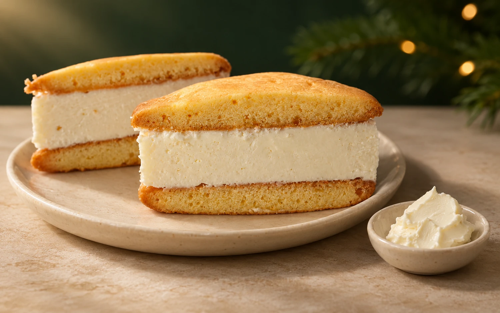
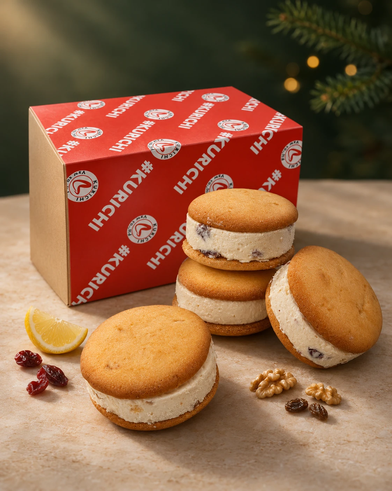
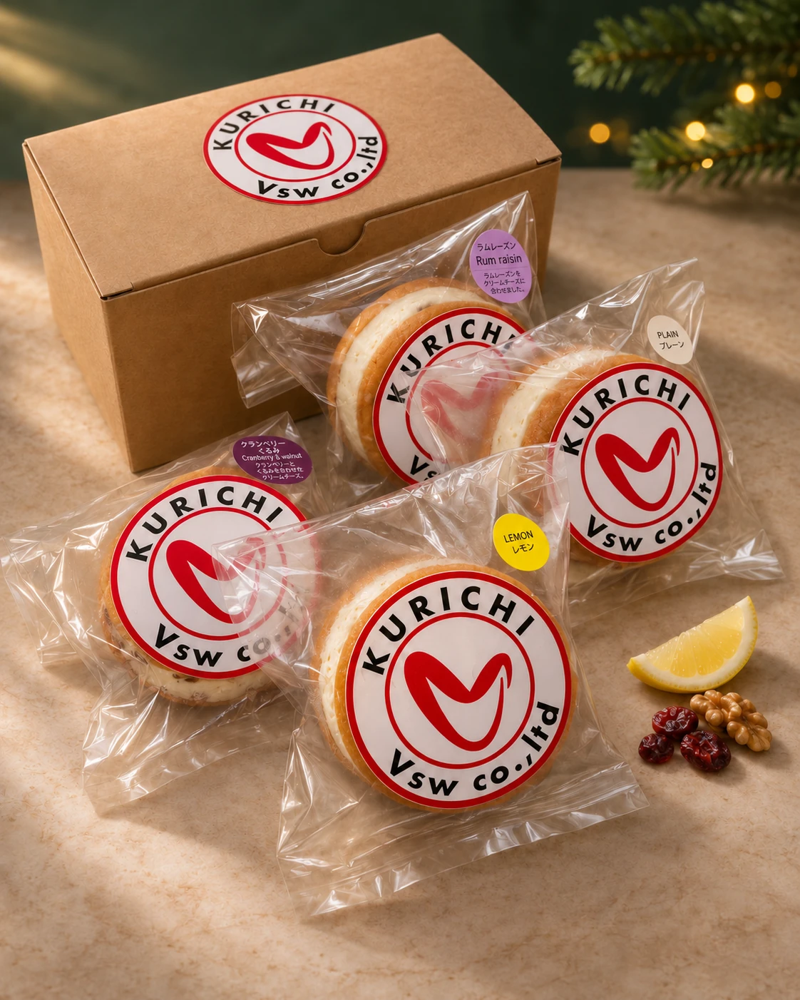
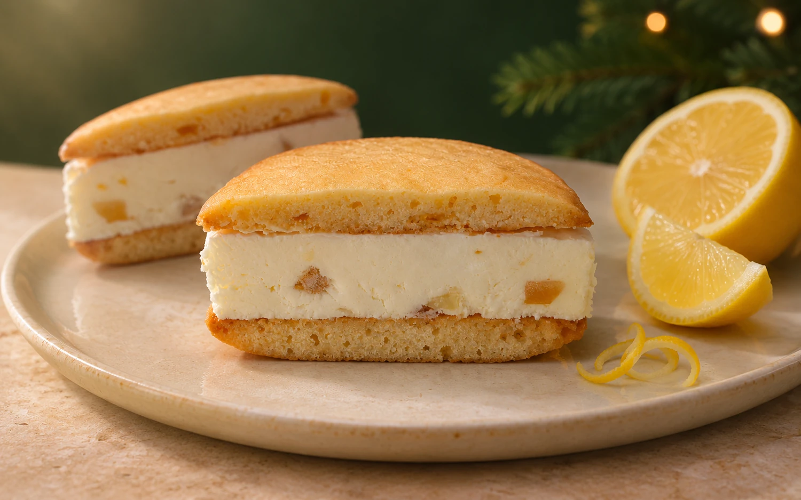
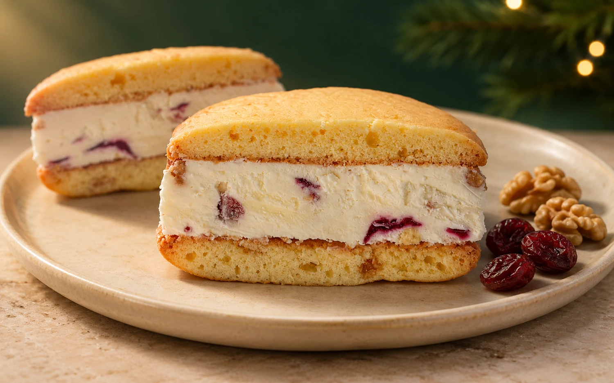
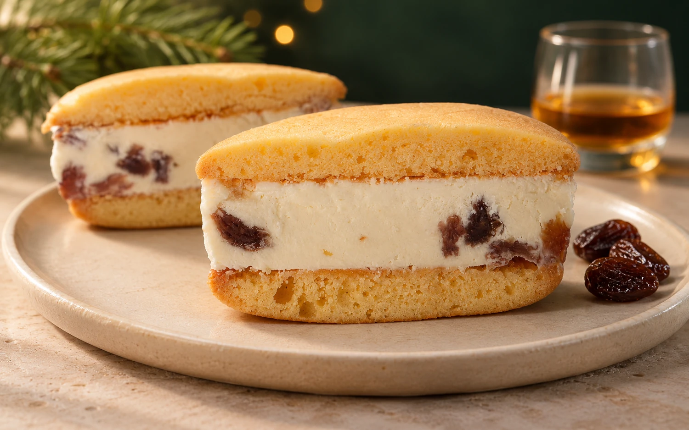
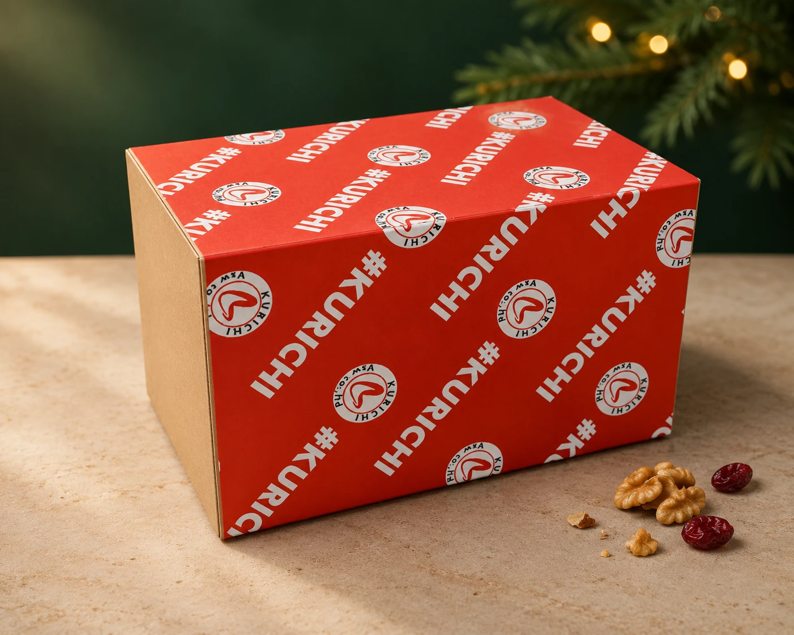

01 Plain
プレーン
クリームチーズのコクを、まっすぐに。
A LITTLE JOY FOR YOU
Winter Gift
しっとりクッキーと、濃厚なクリームチーズ。
大切な人と分かち合いたい、冬のごほうび。
WHOOPIE #KURICHI / WINTER MOMENTS


A GIFT FROM THE HEART01 / THE GIFT
A little something
for someone special.
いつもお世話になっているあの人へ。
久しぶりに集まる、大切な人たちへ。
クリスマスの集まりにも、冬のご挨拶にも。
ウーピー#クリチと一緒に、
心ほどけるひとときを贈りませんか。
02 / THE FLAVORS
Find your favorite.
特製クッキーで、クリームチーズを贅沢に使った
オリジナルの #クリチdisc をサンドしました。

01 Plain
クリームチーズのコクを、まっすぐに。

02 Lemon
レモンの爽やかさを添えて。

03 Cranberry Nuts
クランベリーとクルミの味わい。

04 Rum Raisin
ラムの香りと、レーズンの甘み。
※ クランベリーナッツにはクルミを使用しています。
03 / HOW TO ENJOY
A cozy winter moment.
冷凍保存したウーピー#クリチは、
少し置くとアイスサンドのようなひんやり食感に。
温かいコーヒーや紅茶と一緒に、
冬のゆったりとしたひとときをどうぞ。
